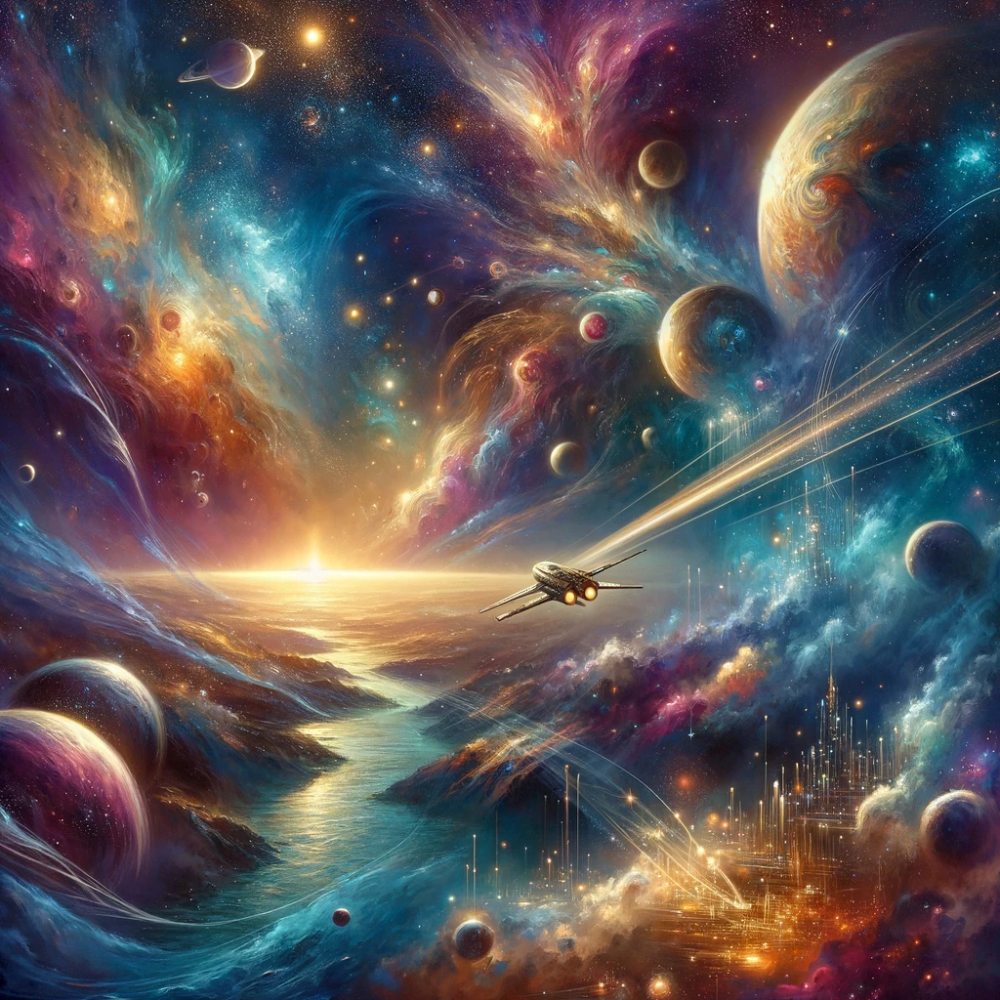
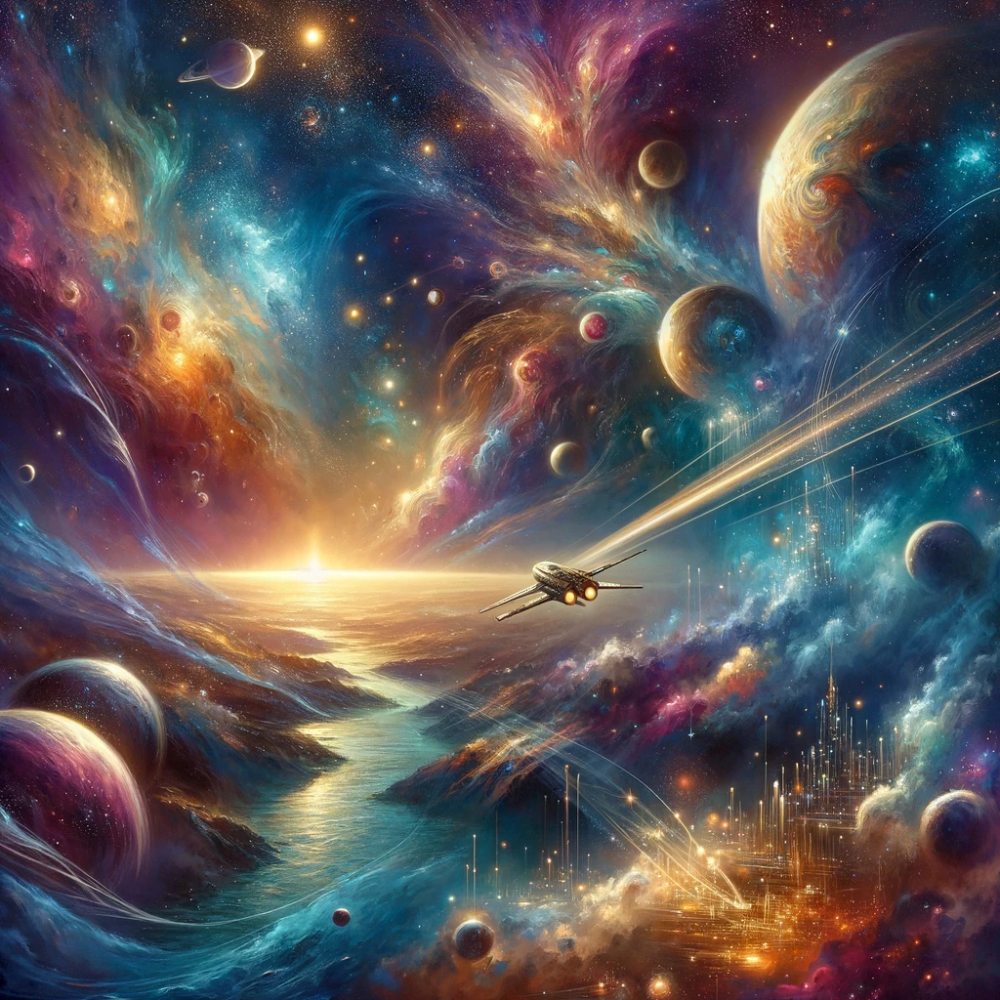

Painting
Nature's Circuitry
Urban Oasis
Celestial Voyage
Immerse yourself in the soothing beats of 'Downtown Dusk: A Lo-Fi Journey.
A soul-stirring collection of piano melodies that resonate with the heart's deepest emotions.
Nature's Circuitry
Urban Oasis
Celestial Voyage
Explore a city of tomorrow, where technology and architecture merge in a symphony of progress.
Dive into the depths of the ocean and uncover the mysteries that lie beneath the waves.
In the silent march of time, a whisper through the ages, A relentless force, unseen, turning countless pages. It weaves through nature's tapestry, in subtle, graceful strides, Marking each moment's passing, where mystery abides.
The changing seasons echo time's unyielding decree, From the bloom of spring's first flower to the fall of the last leaf. A cycle of renewal, of life, and tender farewells, In every leaf a story, in every bloom, a tale it tells.
Human hearts, too, feel the weight of time's silent song, Emotions ebb and flow, as days and years march along. Joy and sorrow intertwined, in love's delicate embrace, Each memory a footprint, time's indelible trace.
Artifacts we leave behind, whispers of our essence, Monuments to moments lived, in vivid quintessence. From stone and canvas, word and sound, our legacy takes shape, A testament to what was loved, to what we dared to make.
Amidst the fleeting moments, against eternity's vast expanse, We dance the timeless dance of day and night, in a delicate balance. For though time may take its toll, and seasons come and go, The beauty of the moment lives on, in the heart's eternal glow.
So let us cherish every second, every minute's fleeting breath, For in the passage of time, there's beauty, even in death. As the world turns beneath the stars, in the silent, endless night, We are part of something greater, in the dance of shadow and light.
Beyond the bounds of Earth's embrace, where dreams and darkness intertwine, A vast and endless cosmos spreads, a tapestry by design. With every star that flickers bright, and galaxies in endless swirl, The universe unveils itself, each mystery to unfurl.
Amidst this vast expanse we stand, small specks in an infinite dance, Gazing up in wonderment, seized by cosmic trance. The night sky, a canvas vast, with dots of light that seem to sing, Whispers tales of distant worlds, and the awe they bring.
Planets in their silent orbit, galaxies in graceful spin, Black holes weaving through the dark, where stars once burned within. Nebulae, in hues of fire, cradle stars in their birth, Crafting light from cosmic dust, the artistry of the universe.
The quest for knowledge drives us forth, beyond our earthly shore, To decipher the ancient lights, and what they have in store. Each discovery a step closer, to understanding our cosmic tale, In this boundless sea of stars, where human curiosity sets sail.
We long to find our place among the constellations bright, To understand our part within the endless night. Are we alone in this vastness, or is life a common thread? The universe keeps its secrets, in the silence vast and spread.
Yet, in this quest, we find our spirit, our resolve to explore, Pushing past our limits, always seeking more. For in the beauty of the cosmos, in its mystery and its grace, Lies the quest for our own origins, our cosmic trace.
So let us journey forth, with eyes wide to the skies, Where galaxies and stars await, to unveil their ancient guise. For in the cosmos vast and wide, with its beauty and its scars, We find a reflection of ourselves, among the infinite stars.